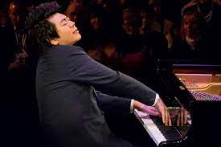
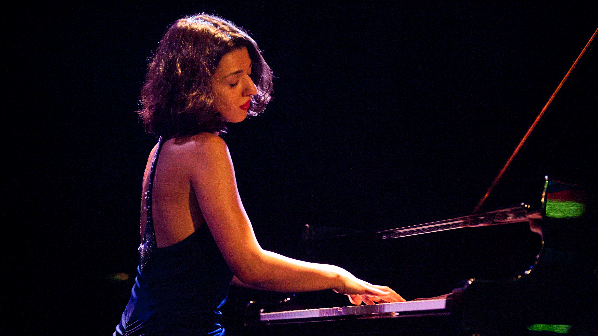

Compositions of Rachmaninoff, Bach, and Beethoven
Rachmaninoff was one of the finest pianists of the 20th centuary. Rachmaninoff's "Prelude in G minor" is one of my favourites due to it's perfect combination of march-like music with a flowing middle section. Yuja Wang's rendition of the piece is amazing and has been in my playlist for some time now.
Prelude in G minor
Johann Sebastian Bach was a German composer widely known known for his orchestral compositions. Many Bach compositions are so popular that many times despite hearing them I did not knew that it belonged to Bach. Bach's "Prelude and Fugue in C major" is one of the most mesmerizing piece that I heard recently. This simple piece is powerful enough to transport you to a different world and arouses strong emotions. Lang Lang's rendition of this peace is so divine and the best I heard so far.
Prelude and Fugue in C major

Ludwig van Beethoven, hailed as one of the most admired composers in the history of Western music needs no introduction. Beethoven's "Piano Concerto No. 1" was written in 1795, then revised in 1800. I find myself listening to Khatia buniatishvili's rendition of the third movement "Rondo. Allegro scherzando" quite often.
Piano Concerto No. 1
